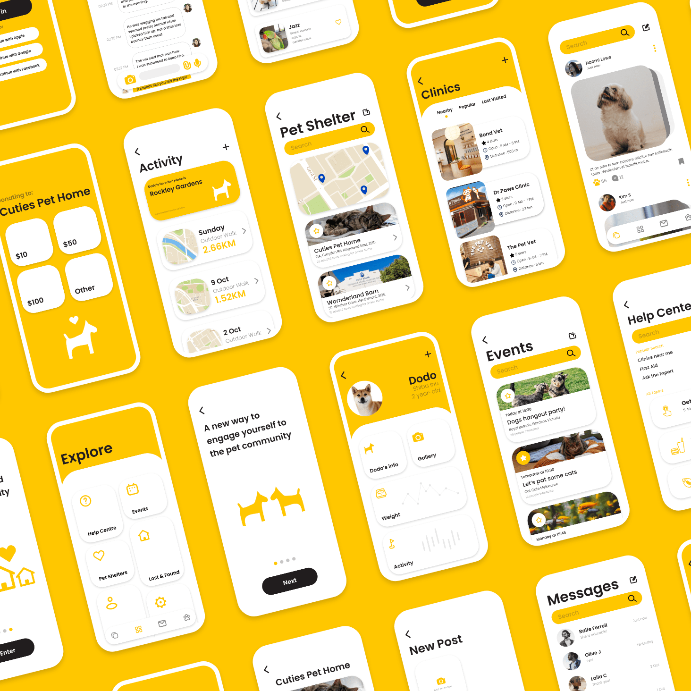
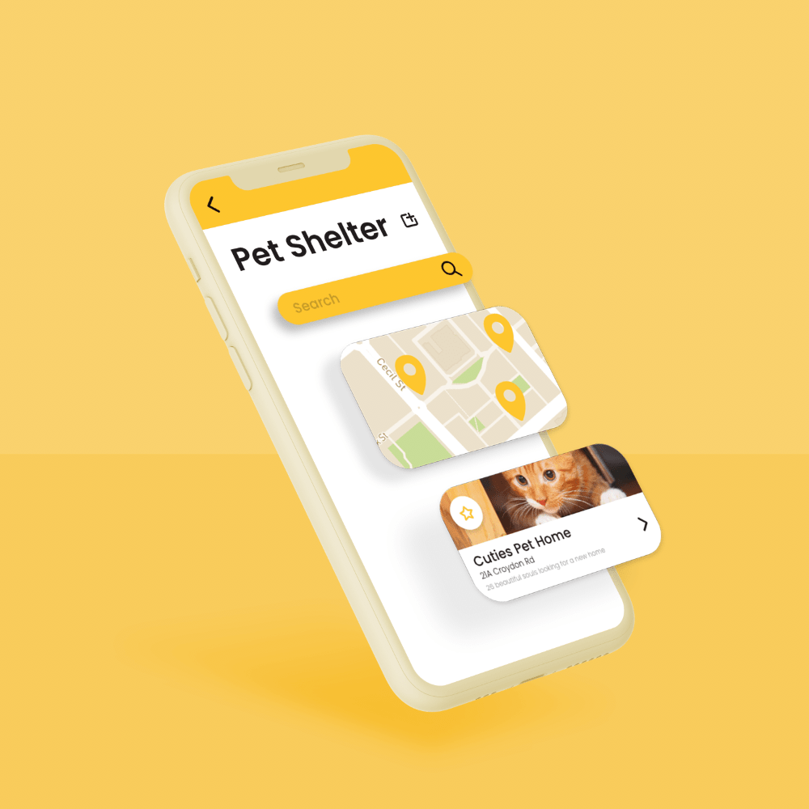
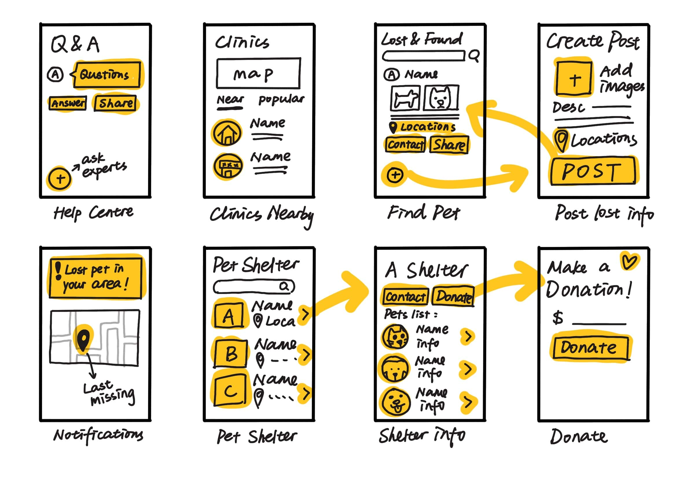

Paws
Social app UI design for pets and pet-lovers
2020
Watch Video
View Prototype

About
Paws is a social application designed for helping in connecting the community by bringing all the pets, pet lovers and other relevant parties together.
This project is a collaborative effort focusing on the high-fidelity design. As team leader, I was responsible for all the idea sketching, low-fidelity prototyping, high-fidelity prototyping, presentation video editing and composing.
Development
Tools
High-fidelity prototyping – Adobe XD
Image assets design – Adobe Illustrator
Demo video editing - Adobe After Effects
Paws Paws Paws Paws Paws Paws Paws Paws Paws Paws Paws Paws Paws Paws Paws Paws

